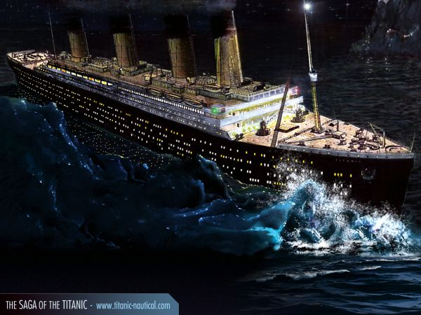

.jpg)
Çarpışma
Thomas Andrews Fleet'in buzdağını gördükten sonra, gemi'nin ölümcül çarpışmasını 37 saniyede yaptığı tahmin edilmektedir. Gemi'nin sancak (sağ) tarafı buzdağı tarafından yırtılmıştır, omurgadaki birçok noktada bükülmeler olmuş, suyun altında kalan perçinler atmış ve bu sayede beş kompartıman suya doğru açılmış (İleri seviye tank, üç ileri ambar ve kazan dairesi 6) ve denizin altında kalmıştır. Normal perçinler yani geminin yukarı tarafındaki perçinler yapım sırasında makineler yardımıyla yerleştirilmiş, ancak geminin deniz altına girecek sancak ve iskele bölümlerine makineler yetişemediğinden perçinler insan gücüyle ve cüruf yardımıyla güçlendirilmiş olsa da fazla cüruf kullanıldığından perçinler daha rahat bir şekilde parçalanmıştır. Çarpmanın tüm etkisi ortalama 10 saniyede tamamlanmıştır. Altıncı kompartımandaki (kazan dairesi) pompalar suyu geldiği hızla geri pompalayabiliyordu. İlk beş kompartıman aşagı yukarı 1.1 m² civarındaki alandaki küçük oyuklar ile delik deşik olmuştu. Öndeki kompartımanlar doldukça, kompartımanlar arasındaki su geçirmez bölmeler kapatıldı. Titanic su yüzünde dört kompartımanın dolması ile ayakta durabilirdi. Ancak gemi beşinci kompartımanlarınada su alıyordu. Kaptan Smith köprüye varır varmaz, çarpmanın etkisi ile birlikte ekibine her şeyin durdurulması emrini etmişti. Çarpmadan sonraki ilk on dakikada bütün kompartımanlar 4,3 m civarında, Atlantik'in buzlu suları ile doldu. Geminin birinci derecedeki subaylarının incelemesini takiben, gemi doğramacısı ve tamircilerinden J. Hutchinson ve Thomas Andrews iki güvertedeki posta odalarınıda içine kapsayan detaylı bir inceleme yaptılar, bu inceleme sonucunda görünen oyduki Titanic batacaktı. Saat gece yarısını vurmadan önce öndeki üçüncü sınıf kısmı suyla dolmaya başlamıştı. Çarpışmadan 25 dakika sonra Saat 00:05'de Kaptan Smith bütün cankurtaran flikalarının örtülerinin açılmasını emir etti;[6] beş dakika sonra saat 00:10'da yerlerinden çıkartılmasını ve saat 00:25'de flikaların kadınlar ve çocuklar ile doldurulmasını ve aşağıya indirilmesini emir etti. Saat 00:50'de dördüncü subay Joseph Boxhall ilk beyaz yardım fişeğini ateşledi. Beyaz fişek atılmasının amacı; diğer gemilerden yardım isteyebilmekti. Fakat; asla batmayacağına inanılan Titanic, sefere çıkmadan önce sadece eğlence amaçlı kullanılan beyaz fişeklerle depolanmıştır. Kırmızı renk olan asıl yardım fişeklerine maalesef yer verilmemiştir. Bu da batma esnasında, fırlatılan beyaz fişeklerin, Titanic'i görebilen diğer gemilerin acil durumu algılayamamasına ve yardımların çok fazla gecikmesine yol açmıştır.
Thomas Andrews Fleet'in buzdağını gördükten sonra, gemi'nin ölümcül çarpışmasını 37 saniyede yaptığı tahmin edilmektedir. Gemi'nin sancak (sağ) tarafı buzdağı tarafından yırtılmıştır, omurgadaki birçok noktada bükülmeler olmuş, suyun altında kalan perçinler atmış ve bu sayede beş kompartıman suya doğru açılmış (İleri seviye tank, üç ileri ambar ve kazan dairesi 6) ve denizin altında kalmıştır. Normal perçinler yani geminin yukarı tarafındaki perçinler yapım sırasında makineler yardımıyla yerleştirilmiş, ancak geminin deniz altına girecek sancak ve iskele bölümlerine makineler yetişemediğinden perçinler insan gücüyle ve cüruf yardımıyla güçlendirilmiş olsa da fazla cüruf kullanıldığından perçinler daha rahat bir şekilde parçalanmıştır. Çarpmanın tüm etkisi ortalama 10 saniyede tamamlanmıştır. Altıncı kompartımandaki (kazan dairesi) pompalar suyu geldiği hızla geri pompalayabiliyordu. İlk beş kompartıman aşagı yukarı 1.1 m² civarındaki alandaki küçük oyuklar ile delik deşik olmuştu. Öndeki kompartımanlar doldukça, kompartımanlar arasındaki su geçirmez bölmeler kapatıldı. Titanic su yüzünde dört kompartımanın dolması ile ayakta durabilirdi. Ancak gemi beşinci kompartımanlarınada su alıyordu. Kaptan Smith köprüye varır varmaz, çarpmanın etkisi ile birlikte ekibine her şeyin durdurulması emrini etmişti. Çarpmadan sonraki ilk on dakikada bütün kompartımanlar 4,3 m civarında, Atlantik'in buzlu suları ile doldu. Geminin birinci derecedeki subaylarının incelemesini takiben, gemi doğramacısı ve tamircilerinden J. Hutchinson ve Thomas Andrews iki güvertedeki posta odalarınıda içine kapsayan detaylı bir inceleme yaptılar, bu inceleme sonucunda görünen oyduki Titanic batacaktı. Saat gece yarısını vurmadan önce öndeki üçüncü sınıf kısmı suyla dolmaya başlamıştı. Çarpışmadan 25 dakika sonra Saat 00:05'de Kaptan Smith bütün cankurtaran flikalarının örtülerinin açılmasını emir etti;[6] beş dakika sonra saat 00:10'da yerlerinden çıkartılmasını ve saat 00:25'de flikaların kadınlar ve çocuklar ile doldurulmasını ve aşağıya indirilmesini emir etti. Saat 00:50'de dördüncü subay Joseph Boxhall ilk beyaz yardım fişeğini ateşledi. Beyaz fişek atılmasının amacı; diğer gemilerden yardım isteyebilmekti. Fakat; asla batmayacağına inanılan Titanic, sefere çıkmadan önce sadece eğlence amaçlı kullanılan beyaz fişeklerle depolanmıştır. Kırmızı renk olan asıl yardım fişeklerine maalesef yer verilmemiştir. Bu da batma esnasında, fırlatılan beyaz fişeklerin, Titanic'i görebilen diğer gemilerin acil durumu algılayamamasına ve yardımların çok fazla gecikmesine yol açmıştır.
